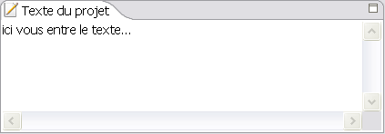
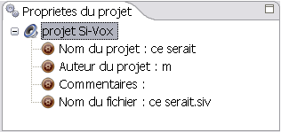

VOCALYSE SIVOX est un logiciel de synthèse vocale qui vous permet de générer un son ou plusieurs son au format WAVE a partir d'un texte.
Le projet SIVOX est composé d'une partie texte où l'utilisateur peut entrer son texte a lire

Il est également composé d'une partie propriété comportant des informations sur le projet (nom du projet, nom d'auteur, commentaire, nom du fichier)

Enfin, il contint une partie prosodie comportant un tableau des prosodie et son graphe associé. Le graphe est une visualisation du tableau qui permet à l'utilisateur de manipuler les données de manière plus intuitives.